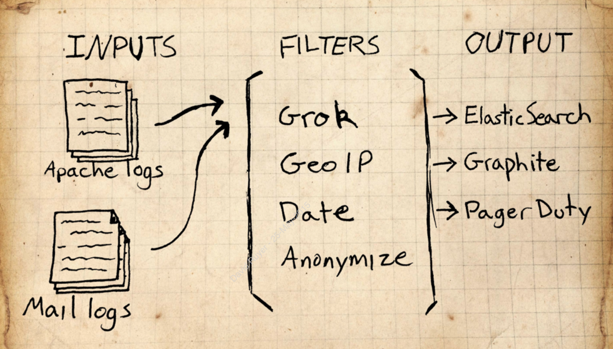

<!doctype html>
<html lang="en">

  <head>
    <meta charset="utf-8">

    <title>elk</title>

    <meta name="apple-mobile-web-app-capable" content="yes" />
    <meta name="apple-mobile-web-app-status-bar-style" content="black-translucent" />

    <meta name="viewport" content="width=device-width, initial-scale=1.0, maximum-scale=1.0, user-scalable=no">

    <link rel="stylesheet" href="lib/reveal.js/css/reveal.min.css">
    <link rel="stylesheet" href="lib/reveal.js/css/theme/night.css">
    <link rel="stylesheet" href="lib/template.css">

    <!-- For syntax highlighting -->
    <link rel="stylesheet" href="lib/reveal.js/lib/css/zenburn.css">

    <!-- If the query includes 'print-pdf', include the PDF print sheet -->
    <script>
      if( window.location.search.match( /print-pdf/gi ) ) {
        var link = document.createElement( 'link' );
        link.rel = 'stylesheet';
        link.type = 'text/css';
        link.href = 'css/print/pdf.css';
        document.getElementsByTagName( 'head' )[0].appendChild( link );
      }
    </script>

    <!--[if lt IE 9]>
    <script src="lib/reveal.js/lib/js/html5shiv.js"></script>
    <![endif]-->
  </head>

  <body>
    <div class="reveal slide">
      <div class="slides" id="content">
        <section data-markdown
                 data-separator="==="
                 data-vertical="---"><script type="text/template">

# ELK

===

# The problem

---

> How many users signed up this week?

<br>

> How successful is our advertising campaign?

<br>

> Why is the database slow?

---

## The answer is in the logs

---

### Log = timestamp + metadata

---

`Started GET "/fr/search?utf8=%E2%9C%93&query=ressources+humaines" for 92.103.52.135 at 2015-06-15 18:20:07 +0200`

---

`cpu_usage 0.74 1395532585`

---

`#<UserAction id: 2801442, user_id: 135813, content_id: 606218, content_type: "JobOffer", kind: "job_offer_application", created_at: "2015-06-15 16:19:20", updated_at: "2015-06-15 16:19:20">`
---

### Logs are a pain in the a**

---

* Unconsistent log formats

* Unconsistent timestamp formats

* Trouble to grep | parse

* Distributed

* Signal v. Noise

---

#### People interested in the logs often...

 * Do not have access to read the logs.

 * Do not have expertise to understand the data.

 * Do not know where the logs are.

---

### ELK's goal is solving these issues

---

### Open Source

* **Logstash** : event processing pipeline

* **Elasticsearch** : storage, search, analysis backend

* **Kibana** : exploration / visualization frontend

===

# 1. Logstash
<br>
The event processing pipeline

---

### The problem

`83.149.9.216 - - [26/Apr/2015:23:13:42 +0000] "GET /presentations/logstash-monitorama-2013/images/kibana-search.png HTTP/1.1" 200 203023 "http://semicomplete.com/presentations/logstash-monitorama-2013/" "Mozilla/5.0 (Macintosh; Intel Mac OS X 10_9_1) AppleWebKit/537.36 (KHTML, like Gecko) Chrome/32.0.1700.77 Safari/537.36"`

---



---

* Read

* Parse

* Structure

* Augment

* Filter

* Output

---

### Result

```json
{
        "message" => "83.149.9.216 - - [26/Apr/2015:23:13:42 +0000] \"GET /presentations/logstash-monitorama-2013/images/kibana-search.png HTTP/1.1\" 200 203023 \"http://semicomplete.com/presentations/logstash-monitorama-2013/\" \"Mozilla/5.0 (Macintosh; Intel Mac OS X 10_9_1) AppleWebKit/537.36 (KHTML, like Gecko) Chrome/32.0.1700.77 Safari/537.36\"",
       "@version" => "1",
     "@timestamp" => "2015-04-26T23:13:42.000Z",
           "host" => "Davids-MacBook-Pro.local",
       "clientip" => "83.149.9.216",
          "ident" => "-",
           "auth" => "-",
      "timestamp" => "26/Apr/2015:23:13:42 +0000",
           "verb" => "GET",
        "request" => "/presentations/logstash-monitorama-2013/images/kibana-search.png",
    "httpversion" => "1.1",
       "response" => 200,
          "bytes" => 203023,
       "referrer" => "\"http://semicomplete.com/presentations/logstash-monitorama-2013/\"",
          "agent" => "\"Mozilla/5.0 (Macintosh; Intel Mac OS X 10_9_1) AppleWebKit/537.36 (KHTML, like Gecko) Chrome/32.0.1700.77 Safari/537.36\"",
          "geoip" => {
                      "ip" => "83.149.9.216",
           "country_code2" => "RU",
           "country_code3" => "RUS",
            "country_name" => "Russian Federation",
          "continent_code" => "EU",
             "region_name" => "48",
               "city_name" => "Moscow",
                "latitude" => 55.75219999999999,
               "longitude" => 37.6156,
                "timezone" => "Europe/Moscow",
        "real_region_name" => "Moscow City",
                "location" => [
            [0] 37.6156,
            [1] 55.75219999999999
        ]
    },
      "useragent" => {
            "name" => "Chrome",
              "os" => "Mac OS X 10.9.1",
         "os_name" => "Mac OS X",
        "os_major" => "10",
        "os_minor" => "9",
          "device" => "Other",
           "major" => "32",
           "minor" => "0",
           "patch" => "1700"
    }
}
```

---

```
input { }

filter { }

output { }
```

---

### Inputs

- File

- Queue

- Network

---

```
input {
  file {
    path => "/var/log/*.log"
    start_position => "beginning"
  }
}

```

---


### Filters

- grok : regex on steroids

- geo / useragent

- mutate / throttle

<div class="fragment">

<br>
<strong>+ conditionals</strong>

</div>

---

```
filter {
  grok {
    match => {
      "message" => '%{IPORHOST:clientip} %{USER:ident} %{USER:auth} \[%{HTTPDATE:timestamp}\] "%{WORD:verb} %{DATA:request} HTTP/%{NUMBER:httpversion}" %{NUMBER:response:int} (?:-|%{NUMBER:bytes:int}) %{QS:referrer} %{QS:agent}'
    }
  }

  geoip {
    source => "clientip"
  }
}
```

---

### Outputs

- **elasticsearch**

- s3 / email / jira

---

```
input {
  stdin { }
}

filter {
  grok {
    match => {
      "message" => '%{IPORHOST:clientip} %{USER:ident} %{USER:auth} \[%{HTTPDATE:timestamp}\] "%{WORD:verb} %{DATA:request} HTTP/%{NUMBER:httpversion}" %{NUMBER:response:int} (?:-|%{NUMBER:bytes:int}) %{QS:referrer} %{QS:agent}'
    }
  }

  date {
    match => [ "timestamp", "dd/MMM/YYYY:HH:mm:ss Z" ]
    locale => en
  }

  geoip {
    source => "clientip"
  }

  useragent {
    source => "agent"
    target => "useragent"
  }
}

output {
  stdout { codec => rubydebug }
  elasticsearch {
    protocol => "http"
    host => "localhost"
  }
}
```

---

Ruby Gems

---

Logstash-Forwarder

---

### Synchronous pipeline !

===

# 2. Elasticsearch

---

Originally, distributed lucene on JSON

---

### Works actually really well with logs

---

**Unstructured search**

> Find all requests for /heavy-computation-required.html

---

**Structured search**

> Find all 404 requests within a particular hour

---

**Analytics**

> Return the average response time for all pages

---

**Combined**

> Return the average response time for all requests between 1PM and 2PM for the page /heavy- computation-required.html

<div class="fragment">
All in (near) realtime
</div>

---

**Plug-and-play clustering**

---

**Zero-cost cross-index search**

<br>

* one index per day

* spend fewer resources on data older than 3 days

* move all data older than a year to backup

---

**Aggregations**

<br>

* sum / mean / significant terms

* **nestable**

---

Shitty API though...

===

# 3. Kibana

---

The **explore and visualize** part

<br>

<div class="fragment">
<small>Because Elasticsearch's API can be a nightmare</small>
</div>

---

* Client-side browser app

* Visualizations (widgets)

* Dashboards

* Shareable

---

### Demo

<br>

**[62.210.123.105](http://62.210.123.105/)**

        </script></section>

      </div>

    </div>

    <script src="lib/reveal.js/lib/js/head.min.js"></script>
    <script src="lib/reveal.js/js/reveal.min.js"></script>
    <script src="lib/jquery/dist/jquery.min.js"></script>
    <script src="config.js"></script>

  </body>
</html>
